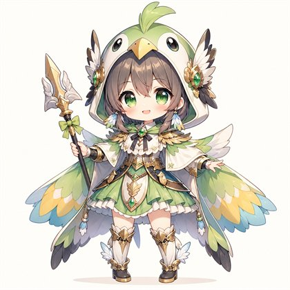
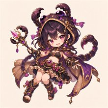

推しごとに違う「動き」
縦横に走る飛、斜めに刺す角、跳び越える桂。主人公の駒の動きで、同じ盤面でも攻め方がまるで変わる。
盤上ローグライク戦略ゲーム
推しと進む、死んだら終わりの十階勝負。
動物コスプレの推し駒を1人選び、毎回形の変わる6×6の盤面を全10階まで攻略。将棋風の動きで「鍵」の番人を倒し、主人公を出口へ導く。
試験版 Windows版を無料で配布中

縦横に走る飛、斜めに刺す角、跳び越える桂。主人公の駒の動きで、同じ盤面でも攻め方がまるで変わる。
主人公が倒れた瞬間に冒険は終了。仲間の離脱も取り返せない。一手の重さを楽しむローグライク。
2・4・7階では囚われた推し駒を1人救出できる。生きて連れ帰れば、次の冒険から主人公に選べる。
壁、罠、宝箱、回復マスの配置は冒険ごとにランダム。階を越えるたびに祝福を1つ選び、自分だけの一行を組み立てる。


正規の将棋ではなく、将棋風の動きを持つHP制のターンバトルです。
| 駒 | 移動 | 攻撃 | 例 |
|---|---|---|---|
| 飛 | 縦横にまっすぐ | 縦横の直線 | 蓮 |
| 角 | 斜めにまっすぐ | 斜めの直線＋隣接 | 結衣 |
| 銀型 | 縦横2マス・斜め1マス | 隣接 | 美桜 |
| 歩 | 前へまっすぐ | 隣接 | 歩太 |
| 桂 | 前方へ桂馬跳び | 桂馬跳びの位置 | 蛙瑠 |
| 香 | 前へ突き進む | 前方の直線 | 鮫牙 |
| 王・援 | 周囲8方向 | 近距離 | 海鈴 |
歩・香・桂は盤の奥まで進むと「成り」、その階の間だけ金の動き（前・斜め前・横・後ろへ1マス）になります。
純粋無垢で一直線。縦横に長く走り、防御を無視する一撃を持つ。
気分屋で誇り高い。斜めの射線から仲間を守る。

自由な関西弁。前に立って仲間をかばう守り役。
気弱で慎重。一歩ずつ進み、仲間を応援で癒やす。
救出や幹部の撃破で、主人公にできる推し駒は全24人まで増えていく。

試験版 v1.0-trial.1 無料でお試しいただけます。
Windows版をダウンロード（zip・約101MB）感想・不具合報告は GitHubのIssues へ。リリース一覧